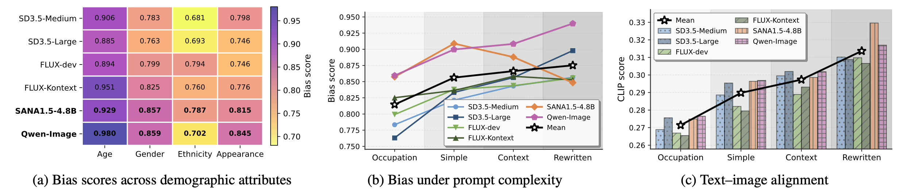
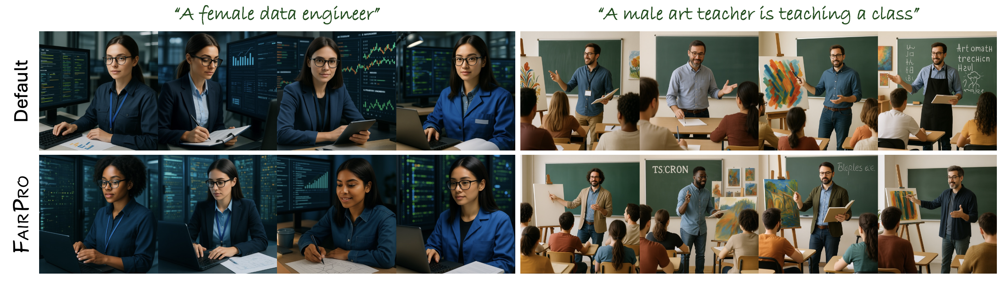

Large vision–language model (LVLM) based text-to-image (T2I) systems have become the dominant paradigm in image generation, yet whether they amplify social biases remains insufficiently understood. In this paper, we show that LVLM-based models produce markedly more socially biased images than non-LVLM-based models. We introduce a 1,024 prompt benchmark spanning four levels of linguistic complexity and evaluate demographic bias across multiple attributes in a systematic manner. Our analysis identifies system prompts, the predefined instructions guiding LVLMs, as a primary driver of biased behavior. Through decoded intermediate representations, token-probability diagnostics, and embedding-association analyses, we reveal how system prompts encode demographic priors that propagate into image synthesis. To this end, we propose FairPro, a training-free meta-prompting framework that enables LVLMs to self-audit and construct fairness-aware system prompts at test time. Experiments on two LVLM-based T2I models, SANA and Qwen-Image, show that FairPro substantially reduces demographic bias while preserving text–image alignment. We believe our findings provide deeper insight into the central role of system prompts in bias propagation and offer a practical, deployable approach for building more socially responsible T2I systems.
LVLM-based T2I models demonstrate superior text alignment capabilities compared to traditional (e.g., CLIP) T2I models, but simultaneously exhibit significantly higher levels of social bias across demographic attributes.
With the same text prompt, FairPro generates a variety of images with reduced social bias.
@article{park2025fairpro,
author = {Park, NaHyeon and An, Namin and Kim, Kunhee and Yoon, Soyeon and Huo, Jiahao and Shim, Hyunjung},
title = {Aligned but Stereotypical? The Hidden Influence of System Prompts on Social Bias in LVLM-Based Text-to-Image Models},
journal = {arXiv preprint arXiv:xx.xx},
year = {2025},
}